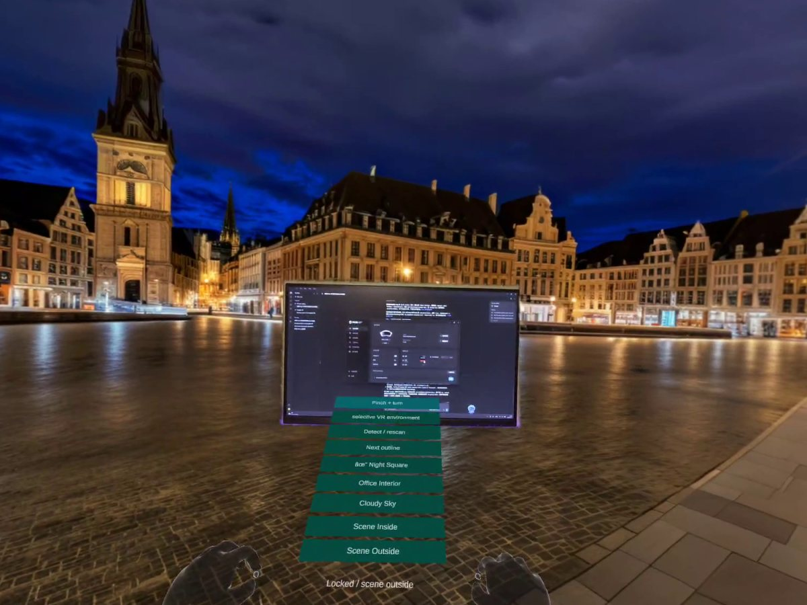

1Scene inside
The room stays real; the monitor becomes a window into another world.
Portals in VR are usually fixed rectangles or markers placed in advance. They ignore what is actually in your room.
Here AI outlines a real object, like your monitor, and turns that exact shape into a window. You choose whether the world appears inside it, or whether the room turns into VR and the object stays real.
Lock the outline once, then pick a destination and a composition. One mask drives both modes.
The room stays real; the monitor becomes a window into another world.
The room becomes VR; the real screen stays usable inside its own outline.



| Inside the outline | Outside the outline | Good for | |
|---|---|---|---|
| Scene inside | Virtual world | Your real room | Peeking into another place |
| Scene outside | Your real object | Virtual world | Working on a real screen inside VR |
SAM 2.1 runs on a laptop GPU linked by USB. Its outline is cleaned up, straightened and placed at the object’s depth, then locked in the room.
Unlike Selective Passthrough, the outline stops tracking once you lock it. It becomes an authored shape, not a live mask.
Proposes object outlines from one camera frame.
Keeps real corners so a monitor stays a rectangle.
Puts the portal on the object’s surface, not floating.
One mask, two compositions, no second segmentation.
Directions this prototype opens up. None of them are tested yet.
Study somewhere else while your real screen stays usable.
A real artefact opens onto its own world.
Keep one real object, transform everything else.
See internal processes inside a real machine.